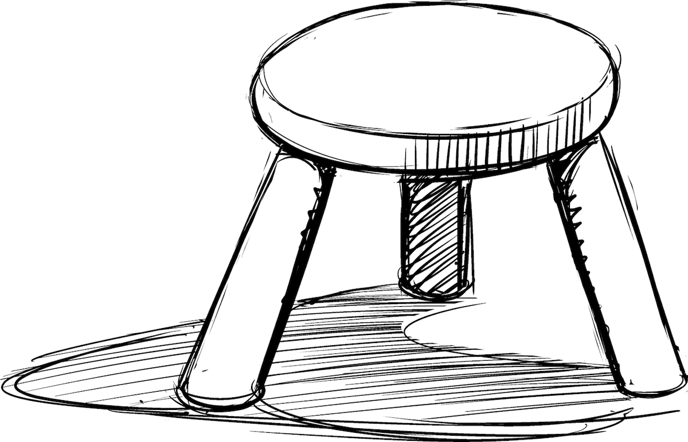
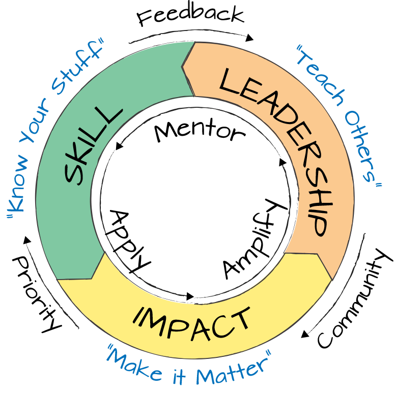

A Three-Legged Stool Does Not Wobble

What do IT architects do? You could say that they are the people who make IT architecture, but that leaves you with having to define what architecture is, which we won’t do until Part II. More interesting yet, what sets a good architecture apart from an average one? And what does an architect become after many successful years? A penthouse resident (Chapter 1)? Hopefully not! A chief technology officer (CTO)? Not a bad choice. Or do they remain a (more senior) architect? That’s what famous building architects do, after all.
It’s time to have a look at the progression of architects.
When asked to characterize the seniority of an architect, I apply a simple framework: a successful architect must stand on three “legs”:
The foundation for practicing architects. It requires knowledge and the ability to apply it to solve real problems.
The measure of how well an architect applies his or her skill to benefit the company.
Determines whether an architect advances the state of the practice.
This nomenclature maps well to other professional fields that rely on highly trained and experienced individuals. For example, in the medical field after studying and acquiring skill, doctors practice and treat patients before they go on to publish in medical journals and pass their learnings on to the next generation of doctors. The legal field works similarly.
Let’s have a brief look at each “leg.”
Knowledge is like having a drawer chest full of tools. Skill implies knowing when to open which drawer and which tool to use.
Skill is the ability to apply relevant knowledge which can relate to specific technologies (such as Docker) or architectures (such as microservices architectures). Such knowledge can usually be acquired by taking a course, reading a book, or perusing online material. Most (but not all) professional certifications focus on verifying knowledge, partly because it’s easily mapped to a set of multiple choice questions. Skill brings this knowledge to life by successfully applying it to specific problems. For example, defining the right domain boundaries and service granularity for a complex microservices architecture is a skill. Knowledge is like having a drawer chest full of tools. Skill implies knowing when to open which drawer and which tool to use.
Impact is measured by the benefit achieved for the business, usually in form of additional revenue or reduced cost. Faster times to market or the ability to incorporate unforeseen requirements late in the product cycle also positively affect revenue and therefore count as impact. Focusing on impact is a good exercise for architects to not drift off into PowerPoint-land. As I converse with colleagues about what distinguishes a great architect, we often identify rational and disciplined decision making (Chapter 6) as a key factor in translating skill into impact. This doesn’t mean that just being a good decision maker makes you a good architect. You still need to know your stuff.
The leadership leg acknowledges that experienced architects do more than make architecture. Mentoring junior architects can save a new generation of architects many years of learning by doing. Senior architects should also further the state of the field as a whole; for example, by sharing what they’ve learned or mental models they’ve developed. Such sharing can be done via numerous channels, including academic publications, magazine articles, teaching at university, teaching professional courses, speaking at conferences, or blogging.
When someone with the title “senior architect” proposes to meet me, I tend to do a quick internet search for their name before I reply. If nothing much comes up, I have doubts as to how “senior” they are. It will also make it more difficult for them to get my time.
Just as a stool cannot stand on two legs, it’s important to appreciate the balance between the three aspects. Skill without impact is where new architects start out as students or apprentices. But soon it is time to get out into the world and make an impact—architects who don’t make an impact don’t have a place in a for-profit business.
Impact without leadership is a typical place for architects who are deeply ingrained in projects but “don’t get out much.” Such architects will plateau at an intermediate level, which is bad for them and their employer. The architects will likely hit a glass ceiling in their career because they won’t be able to see beyond their current environment. Likewise, such an architect won’t lead the company to much-needed innovative or transformative solutions, ultimately limiting their impact.
Many companies are penny wise and pound foolish by not placing sufficient emphasis on nurturing their architects. They fear that any distraction from daily project work will be unproductive. However, they miss out on growing world-class architects.
Mature companies, in contrast, go as far as formalizing the aspect of leadership as “give back”: for example, IBM distinguished engineers and fellows are expected to demonstrate giving back to the community both internally (e.g., via mentoring) and externally (e.g., via conference presentations or publications).
Lastly, leadership without (prior) impact lacks foundation and might be a warning signal that an architect has become an ivory tower resident with a weak link to reality. This undesirable effect can also occur when the impact stage of an architect lies many years or even decades back: the architect might preach methods or insights that are no longer applicable to current technologies. Although some insights are timeless, others age with technology: putting as much logic as possible into the database as stored procedures because it speeds up processing is no longer a wise approach as databases often turn out to be the bottleneck in modern web-scale architectures. The same is true for architectures that rely on nightly batch cycles. Modern 24/7 real-time processing doesn’t know any nighttime.
But there’s more to the three facets of being a good architect: each element contributes back to the other, as shown in Figure 5-1.
As an architect applies their skill to generate impact, they also learn what skills to prioritize to maximize that impact. Most likely you learned a lot of things that don’t easily translate into daily life in corporate IT—the Ackerman function (Chapter 39) is one of my favorites. Given the rate of innovation in our field, being able to prioritize your learning time is a major asset. So, there’s a symbiotic relationship between building up skill and applying it.

Often, the best way to learn something is to apply it to a real-world problem. That’s why my house is full of home automation. It’s not that I really need all things to be automated; most of these were learning projects.
Exercising leadership further amplifies an architect’s impact: 10 well-mentored junior architects will surely generate more impact than one senior architect. As architects, we know that scaling vertically (getting smarter) works only up to a certain level and can lead to a single point of failure (you!). Therefore, you need to scale horizontally (Chapter 30) by deploying your knowledge to multiple architects. The scarcity of good architects makes this step more important than ever.
Interestingly, though, mentoring not only benefits the mentee, but also the mentor. The old saying that to really understand something you need to teach it to someone else is most true for architecture. Likewise, giving a talk or writing a paper (Chapter 18) requires you to sharpen your thoughts, which often leads to renewed insight. Also, in a fast-moving world, mentors can receive reverse mentoring1 about new technologies or approaches, which can often help offload existing assumptions that no longer hold true (Chapter 26).
Authoring books and sharing openly has given me access to the most amazing communities and has allowed me to have much more impact.
Lastly, sharing openly and demonstrating thought leadership offers another huge benefit: it can give you access to a powerful community of other thought leaders, which in turn makes you a better architect. Most tight-knit communities share certain expectations for their members. While usually not spelled out, they typically involve giving back to the community in the form of conference talks, authoring books or blog posts, or contributing to open source projects.
Experienced architects will correctly interpret this 1980s reference (others can resort to Wikipedia2) to mean that an architect doesn’t complete the virtuous cycle just once. This is partly driven by ever-changing technologies and architectural styles. A person might already be a thought leader in relational databases, but they might need to acquire new skills in NoSQL databases. The second time around acquiring skill is usually significantly faster because you can build on what you already know. After a sufficient number of cycles, we might in fact experience what the curmudgeons always knew: that there is really not much new in software architecture and that we’ve seen it all before.
Another reason to repeat the cycle is that the second time around our understanding can be at a much deeper level. The first time around we might have learned how to do things, but only after the second time might we understand why. For example, it’s likely no misrepresentation that writing Enterprise Integration Patterns3 is a form of thought leadership. Still, some of the elements such as the pattern icons or the decision trees and tables in the chapter introductions were more accidental than based on deep insight. It’s only now in hindsight that we understand them as instances of a visual pattern language or pattern-aided decision approaches. Thus, it’s often worthwhile to make another cycle.
Even though architects have one of the most exciting jobs, some people might be sad to see that being an architect implies that you’ll likely remain one for most of your career. I am not so worried about that. First, this puts you in a good peer group of CEOs, presidents, doctors, lawyers, and other high-end professionals. Second, in technically minded organizations, software engineers should feel the same: your next career step should be to remain a software engineer, except a senior one, or staff engineer or perhaps a principal engineer.
The goal is, therefore, to detach the job title of software engineer or IT architect from a specific seniority level.
At many digital organizations the software engineer career ladder reaches all the way to the senior vice president level, with commensurate standing and compensation.
Some organizations even include a chief engineer, which, if you think about it, might be a better title than chief architect. Personally, I prefer to get better at what I like doing than trying to chase something else just for the title. Keep architecting!
1 Jennifer Jordan and Michael Sorell, “Why Reverse Mentoring Works and How to Do It Right,” Harvard Business Review, Oct. 3, 2019, https://oreil.ly/bjAET.
2 Wikipedia, “You Spin Me Round (Like a Record),” https://oreil.ly/fDcRP.
3 Gregor Hohpe and Bobby Woolf, Enterprise Integration Patterns: Designing, Building, and Deploying Messaging Solutions (Boston, MA: Addison-Wesley, 2003).